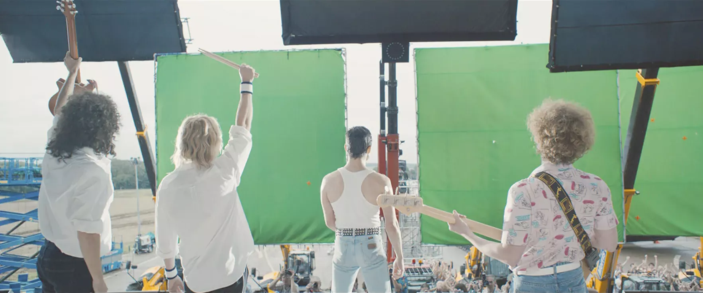
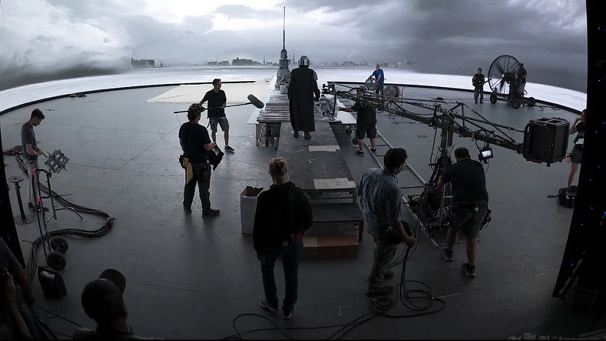

Hope

Cinema Technologies
Cinema is always on the cutting edge of technology, especially for big budget productions. With new ways to create special effects and make them even more real, for a more and more perfect immersion.
From the Green Screen....
The technology of the moment is clearly the virtual studios. The most common technique used to digitally insert characters into a set is the "green screen". The idea is to place the actor in front of a totally green background, often a stretched fabric. Then, in post-production, we remove, with the help of a software, all the green color, to make it transparent. Then, we replace this transparent background with the background in which we want to embed our character. There is often a tracking step, to make the background dynamic. Most of the work is done after the shooting.
Green Screen used for the movie "Bohemian Rhapsody"
...To the Virtual Studio
With the virtual studio technology, we must first create the sets in a 3D software. These softwares are more and more advanced and allow today to create very realistic textures. These 3D environments are then diffused on giant screens, of several meters. The actor is placed in front of it. The novelty behind this system is that the camera(s) is detected by sensors on the set, which allows us to know its precise location, as well as its viewing angle. Thanks to this, the software calculates in real time the part of the 3D set to display on the screen. With this system, the major part of the work is in pre-production, to create the set, but it facilitates all the steps during the shooting, and after. This technology is still new, and still expensive, but sometimes less than paying for the whole post-production, if there is really a lot of scene to inlay.
Shooting of the series The Mandalorian in Virtual Studio
Uses
This is the case of the series The Mandalorian (2019), which uses very few real sets. Or the music video for the song Black Summer by the Red Hot Chili Peppers, which was made entirely with this technology.
I hope that many technologies like this will come to make cinema even more immersive than it already is.